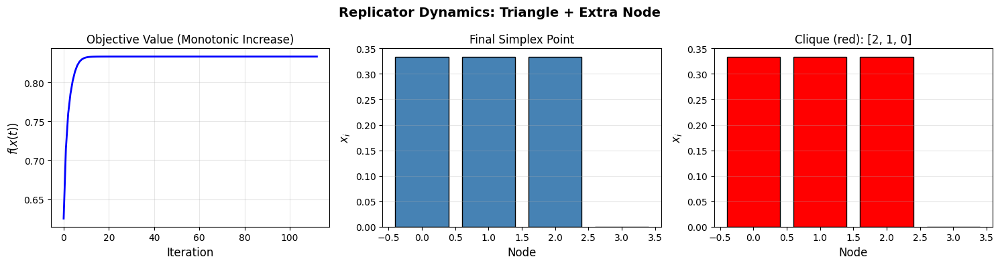
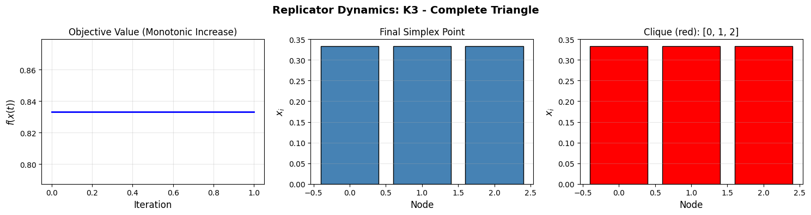
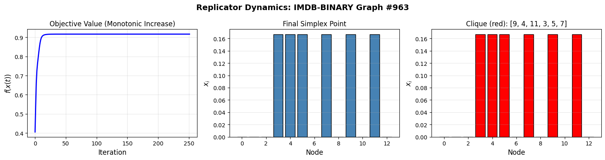
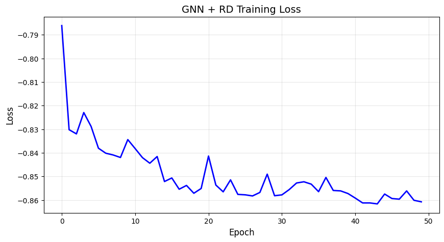

import torch
import numpy as np
import networkx as nx
import matplotlib.pyplot as plt
from torch_geometric.datasets import TUDataset
from torch_geometric.utils import to_networkx
from itertools import combinations
import time
# Load IMDB-BINARY dataset
imdb_dataset = TUDataset(root='./data', name='IMDB-BINARY')
print(f"IMDB-BINARY: {len(imdb_dataset)} graphs")
# Load COLLAB dataset
collab_dataset = TUDataset(root='./data', name='COLLAB')
print(f"COLLAB: {len(collab_dataset)} graphs")
# Examine a sample graph
sample_graph = imdb_dataset[0]
print(f"\nSample graph statistics:")
print(f" Nodes: {sample_graph.num_nodes}")
print(f" Edges: {sample_graph.num_edges}")
IMDB-BINARY: 1000 graphs
COLLAB: 5000 graphs
Sample graph statistics:
Nodes: 20
Edges: 146
def is_clique(nodes, A):
"""
Check if a set of nodes forms a clique.
"""
if len(nodes) <= 1:
return True
for i in range(len(nodes)):
for j in range(i + 1, len(nodes)):
if A[nodes[i], nodes[j]] == 0:
return False
return True
def brute_force_max_clique(A):
"""
Find the maximum clique by brute force enumeration.
"""
n = A.shape[0]
nodes = list(range(n))
for k in range(n, 0, -1):
for subset in combinations(nodes, k):
if is_clique(subset, A):
return list(subset)
return []
def test_brute_force():
"""
Test brute force on small graphs and measure computation time.
"""
# Create a simple test graph: triangle (clique of size 3) plus one extra node
# Nodes 0, 1, 2 form a triangle; node 3 connects only to node 2
A = np.array([
[0, 1, 1, 0],
[1, 0, 1, 0],
[1, 1, 0, 1],
[0, 0, 1, 0]
], dtype=float)
start = time.time()
clique = brute_force_max_clique(A)
elapsed = time.time() - start
print(f"Maximum clique: {clique}")
print(f"Clique size: {len(clique)}")
print(f"Time: {elapsed:.4f} seconds")
# Verify it's actually a clique
print(f"Is valid clique: {is_clique(clique, A)}")
test_brute_force()
Maximum clique: [0, 1, 2]
Clique size: 3
Time: 0.0000 seconds
Is valid clique: True
def evaluate_brute_force_on_dataset(dataset, max_graphs=10, max_nodes=25):
"""
Evaluate brute force on dataset (only small graphs).
"""
results = []
for i in range(min(max_graphs, len(dataset))):
data = dataset[i]
if data.num_nodes > max_nodes:
# print(f"Graph {i}: Skipping (too large: {data.num_nodes} nodes)")
continue
G = to_networkx(data, to_undirected=True)
A = nx.adjacency_matrix(G).toarray().astype(float)
start = time.time()
clique = brute_force_max_clique(A)
elapsed = time.time() - start
results.append((i, len(clique), elapsed))
return results
print("\nEvaluating brute force on IMDB-BINARY:")
imdb_results = evaluate_brute_force_on_dataset(imdb_dataset)
print("\nEvaluating brute force on COLLAB:")
collab_results = evaluate_brute_force_on_dataset(collab_dataset)
print("\nIMDB-BINARY results (graph index, clique size, time):")
for res in imdb_results:
print(res)
Evaluating brute force on IMDB-BINARY:
Evaluating brute force on COLLAB:
IMDB-BINARY results (graph index, clique size, time):
(0, 9, 0.33091306686401367)
(2, 10, 0.5636398792266846)
(4, 9, 0.002767801284790039)
(6, 12, 9.059906005859375e-06)
(7, 9, 0.003709077835083008)
(8, 18, 1.6927719116210938e-05)
(9, 12, 9.059906005859375e-06)
def motzkin_straus_objective(x, A):
"""
Compute the Motzkin-Straus objective f(x) = x^T A x
"""
return float(x.T @ A @ x)
def regularized_objective(x, A):
"""
Compute the regularized objective f_hat(x) = x^T (A + 0.5*I) x
"""
n = A.shape[0]
A_reg = A + 0.5 * np.eye(n)
return float(x.T @ A_reg @ x)
def verify_motzkin_straus():
"""
Verify the Motzkin-Straus theorem on test graphs.
"""
# Test 1: Triangle (K3) - maximum clique size 3
A1 = np.array([
[0, 1, 1],
[1, 0, 1],
[1, 1, 0]
], dtype=float)
clique1 = brute_force_max_clique(A1)
k1 = len(clique1)
x1 = np.zeros(A1.shape[0])
x1[clique1] = 1.0 / k1
f1 = motzkin_straus_objective(x1, A1)
print("Test 1 (K3):")
print(" Clique:", clique1)
print(" f(x*) =", f1, " 1 - 1/k =", 1 - 1 / k1)
# Test 2: Square with diagonal - maximum clique size 3
A2 = np.array([
[0, 1, 1, 1],
[1, 0, 1, 0],
[1, 1, 0, 1],
[1, 0, 1, 0]
], dtype=float)
clique2 = brute_force_max_clique(A2)
k2 = len(clique2)
x2 = np.zeros(A2.shape[0])
x2[clique2] = 1.0 / k2
f2 = motzkin_straus_objective(x2, A2)
print("Test 2 (Square + diagonal):")
print(" Clique:", clique2)
print(" f(x*) =", f2, " 1 - 1/k =", 1 - 1 / k2)
# Test 3: Cherry graph - verify spurious solutions
A3 = np.array([
[0, 0, 1],
[0, 0, 1],
[1, 1, 0]
], dtype=float)
x_true = np.array([0.5, 0.0, 0.5])
x_spur = np.array([0.25, 0.25, 0.5])
f_true = motzkin_straus_objective(x_true, A3)
f_spur = motzkin_straus_objective(x_spur, A3)
f_true_reg = regularized_objective(x_true, A3)
f_spur_reg = regularized_objective(x_spur, A3)
print("Test 3 (Cherry):")
print(" f(x_true) =", f_true, " f(x_spur) =", f_spur)
print(" f_hat(x_true) =", f_true_reg, " f_hat(x_spur) =", f_spur_reg)
verify_motzkin_straus()
Test 1 (K3):
Clique: [0, 1, 2]
f(x*) = 0.6666666666666666 1 - 1/k = 0.6666666666666667
Test 2 (Square + diagonal):
Clique: [0, 1, 2]
f(x*) = 0.6666666666666666 1 - 1/k = 0.6666666666666667
Test 3 (Cherry):
f(x_true) = 0.5 f(x_spur) = 0.5
f_hat(x_true) = 0.75 f_hat(x_spur) = 0.6875
def replicator_dynamics(A, max_iter=1000, tol=1e-12, use_regularization=True):
"""
Run Replicator Dynamics to find the maximum clique.
This follows the formulation from Pelillo et al.:
x_new = x * (A @ x)
x_new = x_new / x_new.sum()
"""
n = A.shape[0]
# Regularization (Pelillo et al. modification to avoid spurious solutions)
if use_regularization:
A_reg = A + 0.5 * np.eye(n)
else:
A_reg = A.copy()
# Initialize at barycenter
x = np.ones(n) / n
history = {
'objectives': [x @ A_reg @ x],
'iterations': 0
}
for t in range(max_iter):
x_old = x.copy()
# Pelillo RD update
x = x * (A_reg @ x)
x = x / x.sum()
# Record objective
obj = x @ A_reg @ x
history['objectives'].append(obj)
history['iterations'] = t + 1
# Check convergence
if np.max(np.abs(x - x_old)) < tol:
break
return x, history
def decode_clique(x, A, threshold=1e-6):
"""
Extract the maximum clique from the RD solution.
Strategy:
1. Sort nodes by x value (descending)
2. Greedily add nodes that maintain clique property
"""
n = A.shape[0]
# Sort nodes by x value (descending)
indices = np.argsort(-x)
clique = []
for i in indices:
# Stop if x value is below threshold and we already have some nodes
if x[i] < threshold and len(clique) > 0:
break
# Check if node i can be added to the current clique
can_extend = True
for j in clique:
if A[i, j] == 0:
can_extend = False
break
if can_extend:
clique.append(i)
return clique
def visualize_rd(A, graph_name="Test Graph"):
"""
Run RD and create visualization of convergence.
"""
x_final, history = replicator_dynamics(A)
n = A.shape[0]
fig, axes = plt.subplots(1, 3, figsize=(15, 4))
# Plot 1: Objective value f(x(t)) over time
axes[0].plot(history['objectives'], 'b-', linewidth=2)
axes[0].set_xlabel('Iteration', fontsize=12)
axes[0].set_ylabel('$f(x(t))$', fontsize=12)
axes[0].set_title('Objective Value (Monotonic Increase)', fontsize=12)
axes[0].grid(True, alpha=0.3)
# Plot 2: Final x values as bar chart
axes[1].bar(range(n), x_final, color='steelblue', edgecolor='black')
axes[1].set_xlabel('Node', fontsize=12)
axes[1].set_ylabel('$x_i$', fontsize=12)
axes[1].set_title('Final Simplex Point', fontsize=12)
axes[1].grid(True, alpha=0.3, axis='y')
# Plot 3: Identify clique and show distribution
clique = decode_clique(x_final, A)
clique_set = set(clique)
colors = ['red' if i in clique_set else 'lightblue' for i in range(n)]
axes[2].bar(range(n), x_final, color=colors, edgecolor='black')
axes[2].set_xlabel('Node', fontsize=12)
axes[2].set_ylabel('$x_i$', fontsize=12)
axes[2].set_title(f'Clique (red): {clique}', fontsize=12)
axes[2].grid(True, alpha=0.3, axis='y')
plt.suptitle(f"Replicator Dynamics: {graph_name}", fontsize=14, fontweight='bold')
plt.tight_layout()
plt.show()
return x_final
def evaluate_rd_on_dataset(dataset, dataset_name, num_graphs=50):
"""
Evaluate Replicator Dynamics on a dataset.
"""
results = []
for i in range(min(num_graphs, len(dataset))):
data = dataset[i]
G = to_networkx(data, to_undirected=True)
A = nx.adjacency_matrix(G).toarray().astype(float)
start_time = time.time()
x_final, history = replicator_dynamics(A, max_iter=1000)
clique = decode_clique(x_final, A)
elapsed = time.time() - start_time
# Verify it's a valid clique
valid = is_clique(clique, A)
results.append({
'graph_idx': i,
'num_nodes': data.num_nodes,
'clique_size': len(clique),
'clique': clique,
'valid': valid,
'time': elapsed,
'iterations': history['iterations']
})
if (i + 1) % 10 == 0:
print(f"Processed {i+1}/{num_graphs} graphs")
# Summary statistics
sizes = [r['clique_size'] for r in results]
times = [r['time'] for r in results]
valid_count = sum(r['valid'] for r in results)
print(f"\n{dataset_name} Results:")
print(f" Mean clique size: {np.mean(sizes):.2f} ± {np.std(sizes):.2f}")
print(f" Mean time: {np.mean(times):.4f} seconds")
print(f" Valid cliques: {valid_count}/{len(results)}")
return results
# Test 1: Visualize RD on the triangle + extra node graph
print("="*60)
print("TEST 1: Visualizing RD on triangle + extra node")
print("="*60)
A_test = np.array([
[0, 1, 1, 0],
[1, 0, 1, 0],
[1, 1, 0, 1],
[0, 0, 1, 0]
], dtype=float)
x_final = visualize_rd(A_test, "Triangle + Extra Node")
print(f"\nFinal x: {x_final}")
clique = decode_clique(x_final, A_test)
print(f"Decoded clique: {clique}")
print(f"Is valid clique: {is_clique(clique, A_test)}")
# Test 2: Visualize RD on K3 (complete triangle)
print("\n" + "="*60)
print("TEST 2: Visualizing RD on K3 (complete triangle)")
print("="*60)
A_k3 = np.array([
[0, 1, 1],
[1, 0, 1],
[1, 1, 0]
], dtype=float)
x_final = visualize_rd(A_k3, "K3 - Complete Triangle")
print(f"\nFinal x: {x_final}")
clique = decode_clique(x_final, A_k3)
print(f"Decoded clique: {clique}")
print(f"Is valid clique: {is_clique(clique, A_k3)}")
# Test 3: Evaluate RD on small subset of IMDB
print("\n" + "="*60)
print("TEST 3: Evaluating RD on IMDB-BINARY (first 5 graphs)")
print("="*60)
imdb_rd_results = evaluate_rd_on_dataset(imdb_dataset, "IMDB-BINARY", num_graphs=5)
# Test 4: Evaluate RD on small subset of COLLAB
print("\n" + "="*60)
print("TEST 4: Evaluating RD on COLLAB (first 5 graphs)")
print("="*60)
collab_rd_results = evaluate_rd_on_dataset(collab_dataset, "COLLAB", num_graphs=5)
# Summary comparison
print("\n" + "="*60)
print("SUMMARY")
print("="*60)
print("\nIMDB-BINARY RD Results:")
for r in imdb_rd_results:
print(f" Graph {r['graph_idx']}: clique_size={r['clique_size']}, valid={r['valid']}, time={r['time']:.4f}s, iter={r['iterations']}")
print("\nCOLLAB RD Results:")
for r in collab_rd_results:
print(f" Graph {r['graph_idx']}: clique_size={r['clique_size']}, valid={r['valid']}, time={r['time']:.4f}s, iter={r['iterations']}")
============================================================
TEST 1: Visualizing RD on triangle + extra node
============================================================

Final x: [3.33333333e-01 3.33333333e-01 3.33333333e-01 1.76038316e-44]
Decoded clique: [2, 1, 0]
Is valid clique: True
============================================================
TEST 2: Visualizing RD on K3 (complete triangle)
============================================================

Final x: [0.33333333 0.33333333 0.33333333]
Decoded clique: [0, 1, 2]
Is valid clique: True
============================================================
TEST 3: Evaluating RD on IMDB-BINARY (first 5 graphs)
============================================================
IMDB-BINARY Results:
Mean clique size: 9.20 ± 1.33
Mean time: 0.0025 seconds
Valid cliques: 5/5
============================================================
TEST 4: Evaluating RD on COLLAB (first 5 graphs)
============================================================
COLLAB Results:
Mean clique size: 39.60 ± 4.84
Mean time: 0.0038 seconds
Valid cliques: 5/5
============================================================
SUMMARY
============================================================
IMDB-BINARY RD Results:
Graph 0: clique_size=9, valid=True, time=0.0026s, iter=377
Graph 1: clique_size=11, valid=True, time=0.0031s, iter=460
Graph 2: clique_size=10, valid=True, time=0.0028s, iter=415
Graph 3: clique_size=7, valid=True, time=0.0021s, iter=354
Graph 4: clique_size=9, valid=True, time=0.0020s, iter=372
COLLAB RD Results:
Graph 0: clique_size=45, valid=True, time=0.0001s, iter=1
Graph 1: clique_size=36, valid=True, time=0.0062s, iter=1000
Graph 2: clique_size=42, valid=True, time=0.0063s, iter=1000
Graph 3: clique_size=32, valid=True, time=0.0001s, iter=1
Graph 4: clique_size=43, valid=True, time=0.0061s, iter=1000
# Seleccionar un grafo aleatorio de IMDB y visualizar RD
print("="*60)
print("Visualizando RD en un grafo aleatorio de IMDB-BINARY")
print("="*60)
# Seleccionar un índice aleatorio
import random
random_idx = random.randint(0, len(imdb_dataset) - 1)
# Obtener el grafo
data = imdb_dataset[random_idx]
G = to_networkx(data, to_undirected=True)
A = nx.adjacency_matrix(G).toarray().astype(float)
print(f"\nGrafo seleccionado: índice {random_idx}")
print(f" Nodos: {data.num_nodes}")
print(f" Aristas: {data.num_edges}")
# Visualizar RD
x_final = visualize_rd(A, f"IMDB-BINARY Graph #{random_idx}")
# Decodificar clique
clique = decode_clique(x_final, A)
print(f"\nResultado:")
print(f" Clique encontrada: {clique}")
print(f" Tamaño: {len(clique)}")
print(f" Es válida: {is_clique(clique, A)}")
print(f" Valor final x: {x_final}")
# Comparar con brute force si es pequeñob
if data.num_nodes <= 20:
print("\nComparando con Brute Force (grafo pequeño):")
clique_bf = brute_force_max_clique(A)
print(f" Brute Force clique: {clique_bf}")
print(f" Tamaño: {len(clique_bf)}")
print(f" RD encontró el óptimo: {len(clique) == len(clique_bf)}")
============================================================
Visualizando RD en un grafo aleatorio de IMDB-BINARY
============================================================
Grafo seleccionado: índice 963
Nodos: 13
Aristas: 62

Resultado:
Clique encontrada: [9, 4, 11, 3, 5, 7]
Tamaño: 6
Es válida: True
Valor final x: [7.42016539e-180 2.86039946e-179 7.42016539e-180 1.66666667e-001
1.66666667e-001 1.66666667e-001 2.86039946e-179 1.66666667e-001
2.86039946e-179 1.66666667e-001 2.86039946e-179 1.66666667e-001
7.42016539e-180]
Comparando con Brute Force (grafo pequeño):
Brute Force clique: [3, 4, 5, 7, 9, 11]
Tamaño: 6
RD encontró el óptimo: True
def compute_node_features(data):
"""
Compute informative node features for the GNN.
Features:
- Normalized degree
- Clustering coefficient
- Log(degree + 1)
Args:
data: PyTorch Geometric Data object
Returns:
x: torch.Tensor of shape (num_nodes, num_features)
"""
G = to_networkx(data, to_undirected=True)
n = G.number_of_nodes()
features = []
# Compute degree and normalize
degrees = dict(G.degree())
max_degree = max(degrees.values()) if degrees else 1
# Compute clustering coefficients
clustering_coeffs = nx.clustering(G)
# Extract features for each node
for node in range(n):
node_features = []
# Feature 1: Normalized degree
degree = degrees.get(node, 0)
norm_degree = degree / max_degree if max_degree > 0 else 0
node_features.append(norm_degree)
# Feature 2: Clustering coefficient
clustering = clustering_coeffs.get(node, 0)
node_features.append(clustering)
# Feature 3: Log(degree + 1)
log_degree = np.log(degree + 1)
node_features.append(log_degree)
features.append(node_features)
return torch.tensor(features, dtype=torch.float)
import torch
import torch.nn as nn
import torch.nn.functional as F
from torch_geometric.nn import GCNConv
class MaxCliqueGNN(nn.Module):
"""
GNN for predicting initial simplex point for Maximum Clique.
"""
def __init__(self, input_dim, hidden_dim=32, num_layers=2):
super().__init__()
self.convs = nn.ModuleList()
self.convs.append(GCNConv(input_dim, hidden_dim))
for _ in range(num_layers - 1):
self.convs.append(GCNConv(hidden_dim, hidden_dim))
self.output = nn.Linear(hidden_dim, 1)
def forward(self, x, edge_index):
"""
Forward pass.
Args:
x: Node features (num_nodes, input_dim)
edge_index: Edge indices (2, num_edges)
Returns:
p: Simplex point (num_nodes,)
"""
# Apply GCN layers with ReLU activation
for conv in self.convs:
x = conv(x, edge_index)
x = F.relu(x)
# Apply output linear layer
logits = self.output(x) # Shape: (num_nodes, 1)
logits = logits.squeeze(-1) # Shape: (num_nodes,)
# Apply softmax to get valid simplex point
p = F.softmax(logits, dim=0) # Shape: (num_nodes,)
return p
def differentiable_rd_step(p, A):
"""
One step of differentiable Replicator Dynamics.
Args:
p: torch.Tensor (n,) - current simplex point
A: torch.Tensor (n, n) - adjacency matrix (with regularization)
Returns:
p_new: torch.Tensor (n,) - updated simplex point
"""
# Compute fitness: A @ p
fitness = A @ p # Shape: (n,)
# Replicator dynamics update: p_new = p * fitness
p_new = p * fitness # Element-wise multiplication
# Normalize to stay in simplex
p_new = p_new / p_new.sum() # Normalize so sum(p_new) = 1
return p_new
def differentiable_rd(p, A, num_iterations=3):
"""
Multiple steps of differentiable RD.
"""
A_reg = A + 0.5 * torch.eye(A.shape[0], device=A.device)
for _ in range(num_iterations):
p = differentiable_rd_step(p, A_reg)
return p
def maxclique_loss(p, A):
"""
Motzkin-Straus loss (negative because we minimize).
"""
quad_form = p @ A @ p # Es lo mismo que torch.dot(p, A @ p)
return -quad_form
def train_gnn(model, dataset, num_epochs=100, lr=0.01, rd_train_iters=3):
"""
Train the GNN model.
Args:
model: MaxCliqueGNN
dataset: PyTorch Geometric dataset
num_epochs: number of training epochs
lr: learning rate
rd_train_iters: RD iterations during training
Returns:
model: trained model
losses: list of epoch losses
"""
optimizer = torch.optim.Adam(model.parameters(), lr=lr)
losses = []
for epoch in range(num_epochs):
model.train()
epoch_loss = 0
for data in dataset:
optimizer.zero_grad()
# 1. Compute node features
x = compute_node_features(data)
edge_index = data.edge_index
# Move to same device as model
x = x.to(next(model.parameters()).device)
edge_index = edge_index.to(next(model.parameters()).device)
# 2. Forward pass through GNN to get p (initial simplex point)
p = model(x, edge_index) # Shape: (num_nodes,)
# 3. Convert adjacency matrix to torch tensor
G = to_networkx(data, to_undirected=True)
A_np = nx.adjacency_matrix(G).toarray().astype(float)
A = torch.tensor(A_np, dtype=torch.float32)
A = A.to(next(model.parameters()).device)
# 3. Apply differentiable RD to refine p
p_refined = differentiable_rd(p, A, num_iterations=rd_train_iters)
# 4. Compute Motzkin-Straus loss
loss = maxclique_loss(p_refined, A)
# 5. Backward and optimize
loss.backward()
optimizer.step()
epoch_loss += loss.item()
epoch_loss /= len(dataset)
losses.append(epoch_loss)
if (epoch + 1) % 10 == 0:
print(f"Epoch {epoch+1}/{num_epochs}, Loss: {epoch_loss:.4f}")
return model, losses
def evaluate_gnn(model, dataset, rd_test_iters=100):
"""
Evaluate the trained model.
Args:
model: trained MaxCliqueGNN
dataset: PyTorch Geometric dataset
rd_test_iters: RD iterations during inference
Returns:
results: list of evaluation results
"""
model.eval()
results = []
with torch.no_grad():
for i, data in enumerate(dataset):
# 1. Compute node features
x = compute_node_features(data)
edge_index = data.edge_index
# Move to same device as model
x = x.to(next(model.parameters()).device)
edge_index = edge_index.to(next(model.parameters()).device)
# 2. GNN forward pass to get initial simplex point
p = model(x, edge_index) # Shape: (num_nodes,)
# 3. Convert adjacency matrix to torch tensor
G = to_networkx(data, to_undirected=True)
A_np = nx.adjacency_matrix(G).toarray().astype(float)
A = torch.tensor(A_np, dtype=torch.float32)
A = A.to(next(model.parameters()).device)
# 3. Apply many RD iterations for convergence
start_time = time.time()
p_refined = differentiable_rd(p, A, num_iterations=rd_test_iters)
elapsed = time.time() - start_time
# 4. Decode clique from the refined solution
p_np = p_refined.cpu().numpy()
clique = decode_clique(p_np, A_np)
# 5. Verify it's a valid clique
valid = is_clique(clique, A_np)
results.append({
'graph_idx': i,
'num_nodes': data.num_nodes,
'num_edges': data.num_edges,
'clique_size': len(clique),
'clique': clique,
'valid': valid,
'time': elapsed,
'p_final': p_np
})
if (i + 1) % 10 == 0:
print(f"Evaluated {i+1}/{len(dataset)} graphs")
# Summary statistics
sizes = [r['clique_size'] for r in results]
times = [r['time'] for r in results]
valid_count = sum(r['valid'] for r in results)
print(f"\nEvaluation Results:")
print(f" Mean clique size: {np.mean(sizes):.2f} ± {np.std(sizes):.2f}")
print(f" Mean time: {np.mean(times):.4f} seconds")
print(f" Valid cliques: {valid_count}/{len(results)}")
return results
# Entrenar el modelo primero
print("=" * 60)
print("TRAINING GNN + RD")
print("=" * 60)
# Usar solo los primeros 50 grafos para entrenamiento (más rápido)
train_dataset = imdb_dataset[:50]
# Crear modelo
model = MaxCliqueGNN(input_dim=3, hidden_dim=32, num_layers=2)
# Entrenar
model, losses = train_gnn(
model=model,
dataset=train_dataset,
num_epochs=50,
lr=0.01,
rd_train_iters=3
)
# Visualizar pérdida de entrenamiento
plt.figure(figsize=(10, 5))
plt.plot(losses, 'b-', linewidth=2)
plt.xlabel('Epoch', fontsize=12)
plt.ylabel('Loss', fontsize=12)
plt.title('GNN + RD Training Loss', fontsize=14)
plt.grid(True, alpha=0.3)
plt.show()
# Evaluar en los grafos de prueba
print("\n" + "=" * 60)
print("EVALUATING GNN + RD ON IMDB")
print("=" * 60)
test_dataset = imdb_dataset[50:100] # Usar grafos diferentes para prueba
gnn_results = evaluate_gnn(
model=model,
dataset=test_dataset,
rd_test_iters=100
)
# Mostrar resultados detallados de los primeros 5 grafos
print("\nDetailed Results (first 5 graphs):")
for r in gnn_results[:5]:
print(f" Graph {r['graph_idx']}: "
f"size={r['clique_size']}, "
f"valid={r['valid']}, "
f"time={r['time']:.4f}s")
============================================================
TRAINING GNN + RD
============================================================
Epoch 10/50, Loss: -0.8344
Epoch 20/50, Loss: -0.8551
Epoch 30/50, Loss: -0.8582
Epoch 40/50, Loss: -0.8572
Epoch 50/50, Loss: -0.8607

============================================================
EVALUATING GNN + RD ON IMDB
============================================================
Evaluated 10/50 graphs
Evaluated 20/50 graphs
Evaluated 30/50 graphs
Evaluated 40/50 graphs
Evaluated 50/50 graphs
Evaluation Results:
Mean clique size: 10.44 ± 4.19
Mean time: 0.0004 seconds
Valid cliques: 50/50
Detailed Results (first 5 graphs):
Graph 0: size=7, valid=True, time=0.0004s
Graph 1: size=17, valid=True, time=0.0004s
Graph 2: size=6, valid=True, time=0.0003s
Graph 3: size=8, valid=True, time=0.0003s
Graph 4: size=12, valid=True, time=0.0003s